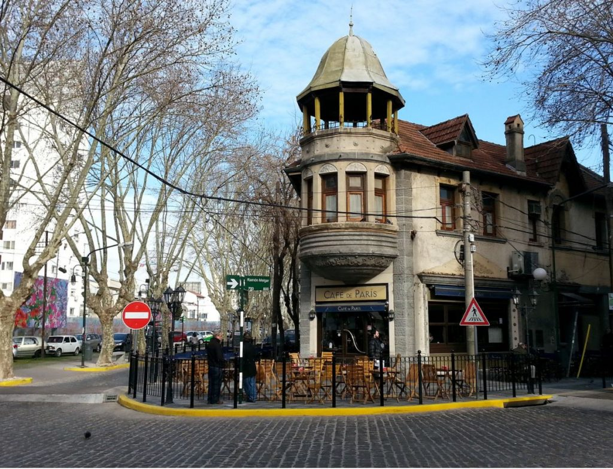

Entre la ciudad y el río
Vicente López es un partido ubicado en la zona norte del Gran Buenos Aires. Su cercanía con la capital lo convierte en un espacio de transición entre el ritmo urbano y la calma del Río de la Plata.

Vicente López es un partido ubicado en la zona norte del Gran Buenos Aires. Su cercanía con la capital lo convierte en un espacio de transición entre el ritmo urbano y la calma del Río de la Plata.
